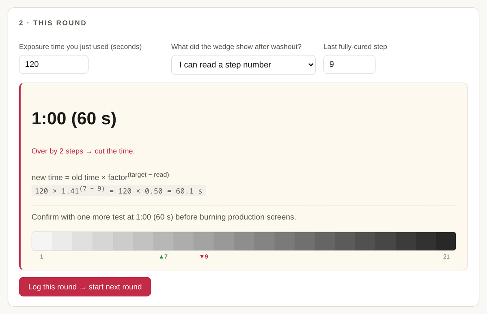
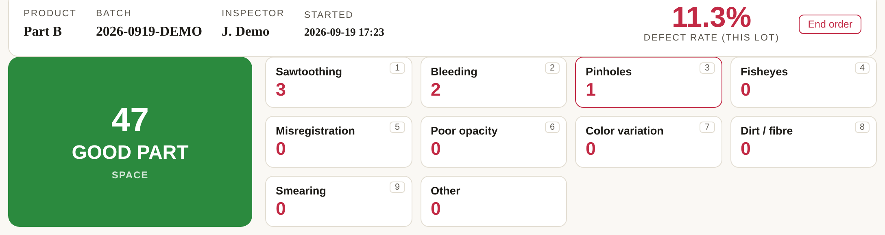
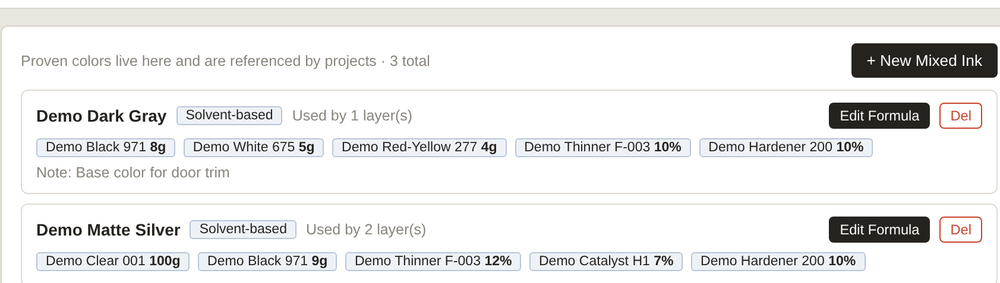
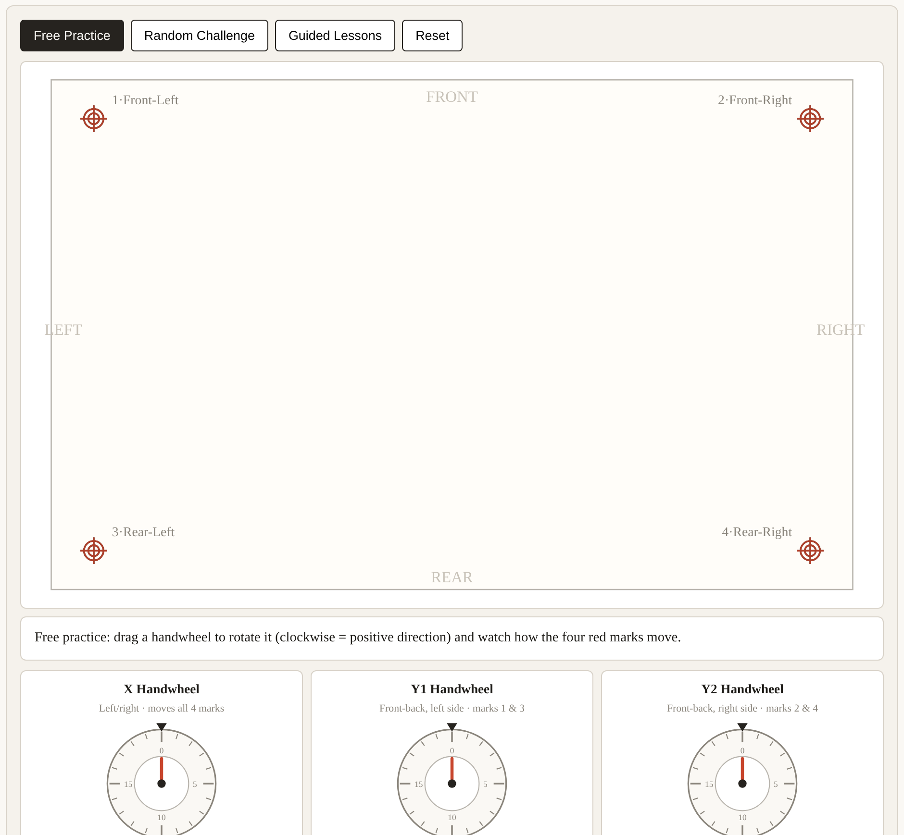
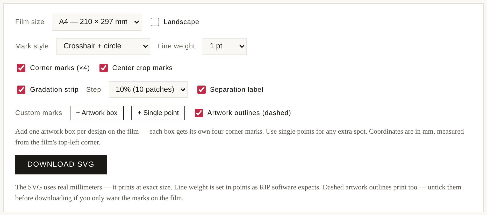

Free, single-file HTML tools built by a working screen printing engineer. Each one runs entirely in your browser — nothing is uploaded, nothing needs installing. Use them right here, or download the file and double-click it on any computer, offline. More tools, full guides and production articles at screenprintfoundry.com.

Read your step-wedge or factor-filter test, get the corrected exposure time with the math shown. Presets for Stouffer T2115/T3110/T4105/T4110, SAATI 21-Step, Ryonet, KIWO/Ulano ExpoCheck, Chromaline Dual and SAATI Exposure Calculator — plus custom scales, off-the-scale guidance (double / halve retest), and a session log that tracks you round by round until you're locked in.

A browser-based inspection station: one-keystroke good/defect counting, live defect rate, defect Pareto, per-inspector statistics, editable defect types, audit log and CSV export. Built for the end of a production line — all records stay on the computer it runs on.

A local database for your ink formulas: raw-material library, mixed-ink recipes, per-project print layers with screen photos, a weighing calculator, and a printable shop-floor mixing sheet. Your recipes are production secrets — they never leave your computer.

A training simulator for three-axis presses (X / Y1 / Y2): read misregistration patterns, split them into translation, the common front-back component and rotation, and practice on virtual handwheels — guided lessons, random challenges, step-by-step solutions. Make your mistakes here instead of on the machine.

Build a custom film-positive template — corner registration marks, center crop marks, gradation strip, separation label, custom artwork boxes — matched to your film size. Live preview, SVG download for Illustrator / CorelDRAW / Inkscape.
Each tool is one .html file — no server, no account, no internet required. Data you enter is stored in your own browser's local storage on your own machine. Clearing browser site data wipes it, so use the built-in JSON backup for anything that matters. Every tool includes a "download standalone file" button, so you can take a copy to the shop floor and pass it around like any document.